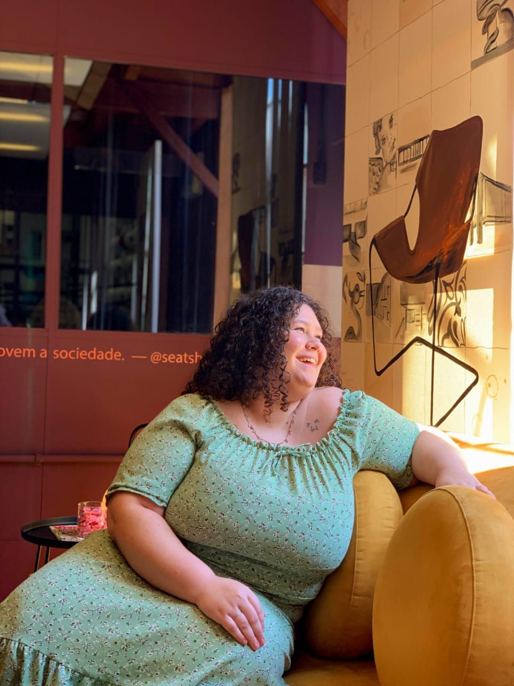

"Como arquiteto, se desenha para o presente, com certo conhecimento do passado, para um futuro que é essencialmente desconhecido."
Norman Foster

Sobre Mim
Olá, prazer em conhecer!
Meu nome é Francine Amaro, sou uma estudante de Arquitetura e Urbanismo da Universidade Regional de Blumenau (FURB), atualmente cursando o 5° semestre.
Minha trajetória é definida pela curiosidade e a constante busca de aperfeiçoamento, sempre buscando projetos que unem estética com eficiência técnica. Atualmente tenho em minha bagagem, dois anos de estágio junto ao Corpo de Bombeiros Militar de Santa Catarina, que me favoreceram com um grande domínio das Instruções Normativas, tramitação de processos e leitura de projetos de prevenção e segurança contra incêndio e pânico.
Gosto de passar meu tempo aprofundando meus conhecimentos dos Softwares de BIM, acreditando que a inovação tecnológica é a chave para construir espaços que melhorem o mundo. Fora do ambiente acadêmico adoro passeios ao ar livre, uma boa leitura e tempo de qualidade com minha família e amigos, incluindo minha gata.
×


Deslize ou use as setas para explorar
"Arquitetura não é um curso, é um caminho, percurso.
Até o que não sou me faz!
Dentre todas as artes, esta me satisfaz, tira de mim tudo o que sou capaz…"
Emanuel Souto
Vamos construir o futuro?
Estou disponível para estágios e colaborações.